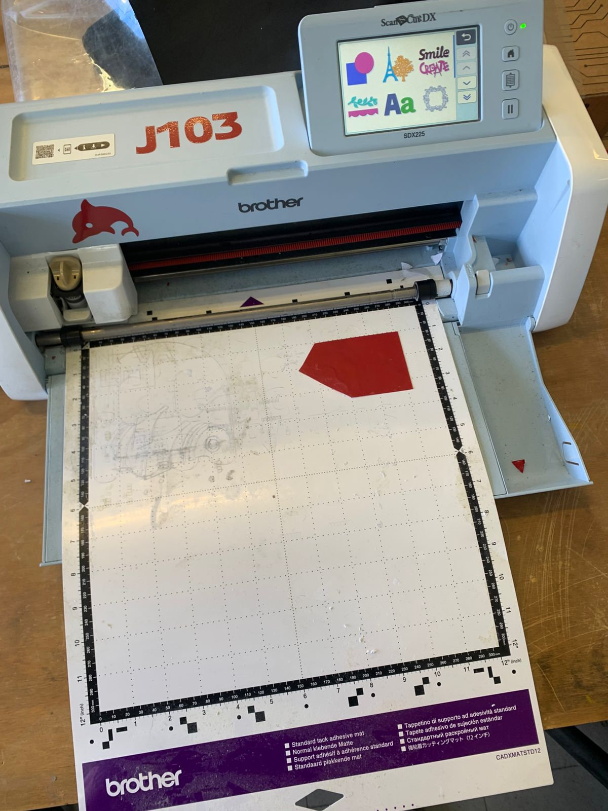
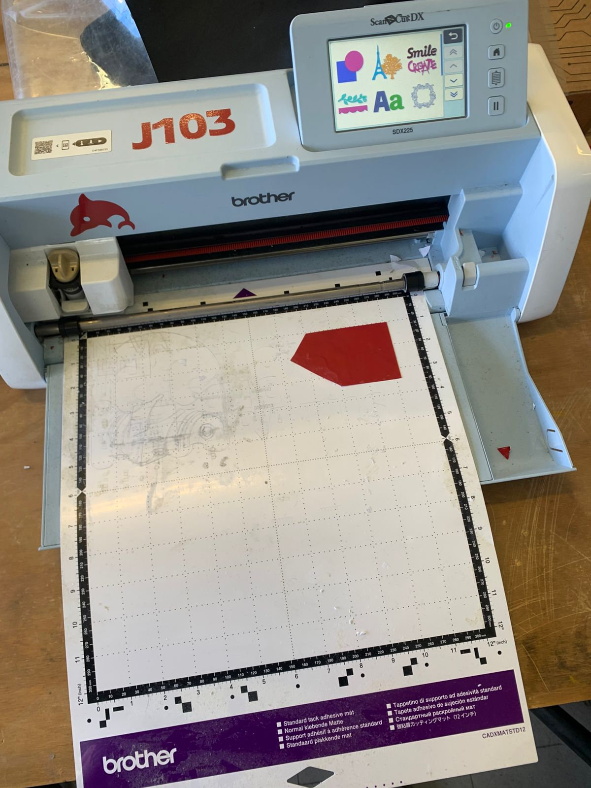
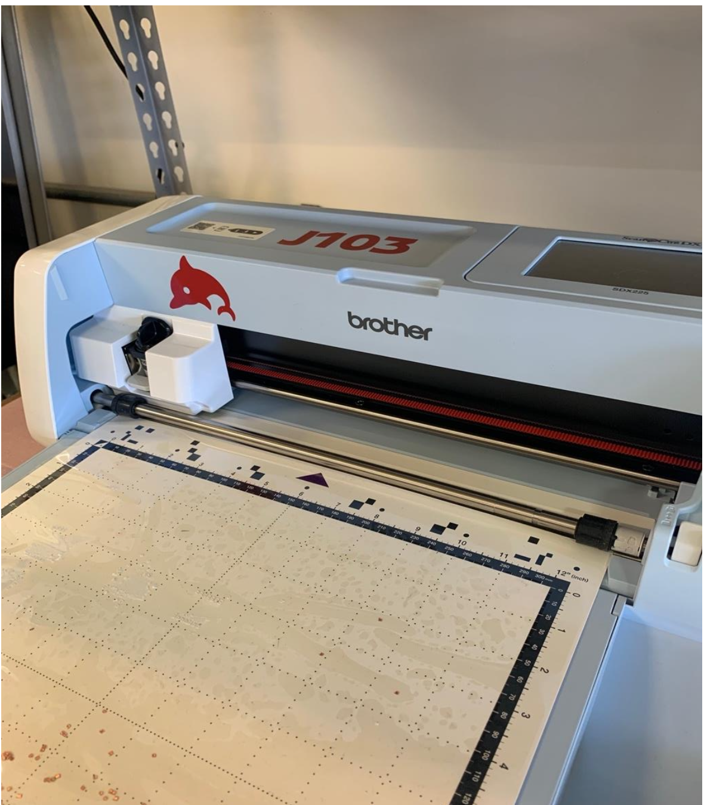

Práctica 4
Cortadora de Vinil Brother J103
En esta práctica aprendimos el proceso completo de diseño y corte de viniles utilizando la cortadora Brother J103, desde la preparación del diseño digital en el software CanvasWorkspace hasta la configuración y corte físico del material con la máquina. Exploramos cómo ajustar parámetros como la velocidad y la presión de corte según el tipo de vinil, y comprendimos la importancia del posicionamiento preciso y el uso adecuado del tapete de corte para obtener resultados limpios y profesionales..
Proceso en la Cortadora de Vinil
¿Qué es la Cortadora de Vinil Brother J103?
Una cortadora de vinil (o plotter de corte) es una máquina que corta diseños en vinil adhesivo u otros materiales delgados (vinilo de señalética, termoadhesivo para ropa, vinil decorativo, entre otros).
Botones
En el panel frontal de la cortadora Brother J-103 se encuentran los botones de control más importantes, que permiten manejar las funciones básicas del equipo de forma rápida y sencilla.
- Botón de encendido o apagado: Al presionarlo, la luz indicadora se ilumina, señalando que la cortadora está lista para usarse.
- Botón Home (Inicio): Permite volver a la pantalla principal del menú en cualquier momento. Es útil cuando se desea cancelar una acción o iniciar un nuevo proyecto desde cero
- Botón de Carga de Tapete: Se utiliza para insertar o retirar el tapete de corte dentro del equipo. Al presionarlo, el mecanismo ajusta automáticamente la posición del tapete para comenzar el corte o escaneo.
- Botón de Pausa: Este botón detiene temporalmente el proceso de corte o escaneo
Coloca el material
Asegúrate de tener el material bien adherido sobre el tapete adhesivo. Inserta el tapete en la máquina con la flecha apuntando hacia adentro y presiona el botón que está justo debajo del botón “Home” para cargarlo.
 

Descarga el tapete
Cuando termines, presiona nuevamente el botón debajo de “Home” para descargar el tapete.
Preparar el archivo
Antes de comenzar, asegúrate de tener tu archivo guardado en una memoria USB. La máquina acepta los siguientes formatos: PHX, PHC, FCM, PES y SVG.
Conectar la USB a la máquina
Inserta la memoria USB en el puerto ubicado en el costado derecho de la cortadora. Asegúrate de que esté bien conectada antes de continuar.

Acceder desde la pantalla principal
Con la máquina encendida y en la pantalla “Home”, selecciona la opción “Retrieve Data”. Luego, elige la opción “Buscar dentro de USB” para acceder a tus archivos.


Seleccionar tu diseño
Después de unos segundos, la pantalla mostrará todos los archivos compatibles dentro de la memoria USB. Solo selecciona el diseño que deseas cortar y continúa con la configuración.

Visualiza tu diseño
Una vez que selecciones el archivo que deseas cortar, aparecerá una cuadrícula en pantalla con tu diseño.
Verifica la posición del material
Si el material se encuentra dentro de la cuadrícula, simplemente toca “OK” para comenzar el corte.

Selecciona la herramienta de movimiento
Dentro del menú, elige la segunda opción, identificada con dos formas, para activar la función de mover el diseño.

Ajusta la posición del diseño
Arrastra el dibujo completo con el dedo hasta colocarlo en una zona de la cuadrícula donde sí haya material disponible.
Configurar los parámetros de corte
Para comenzar, selecciona qué deseas cortar o el modo “Cut”. Una vez dentro, abre la opción de configuración


Ajusta los valores de corte
Usa los siguientes valores recomendados para obtener un mejor resultado:
- Cut speed: 3
- Cut pressure: -9
- Cut pressure (manual): -9
- Cut amount: Auto
- Half cut: On
- Half cut pressure: -2